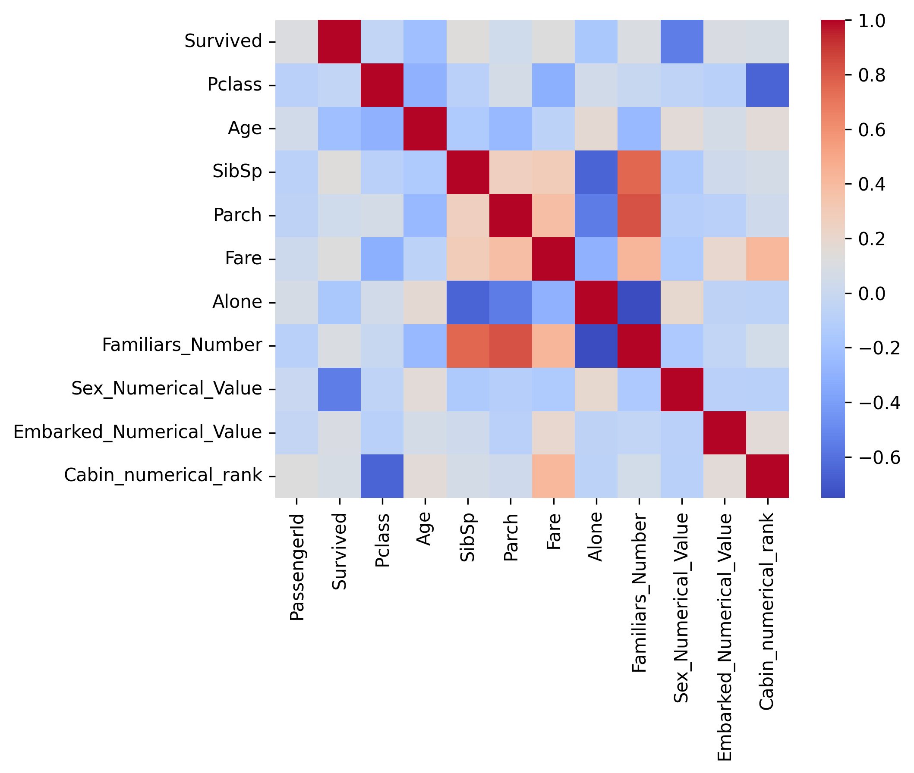
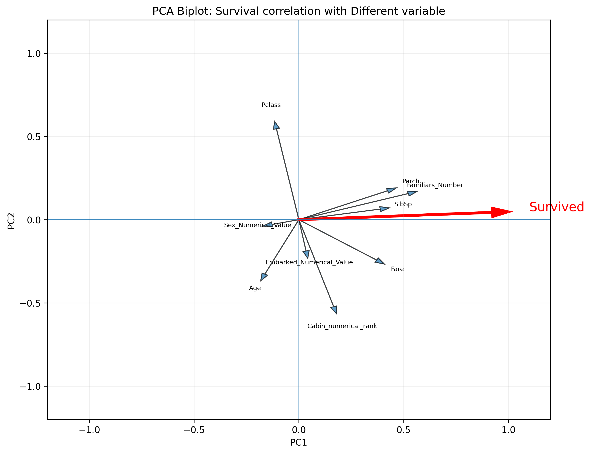
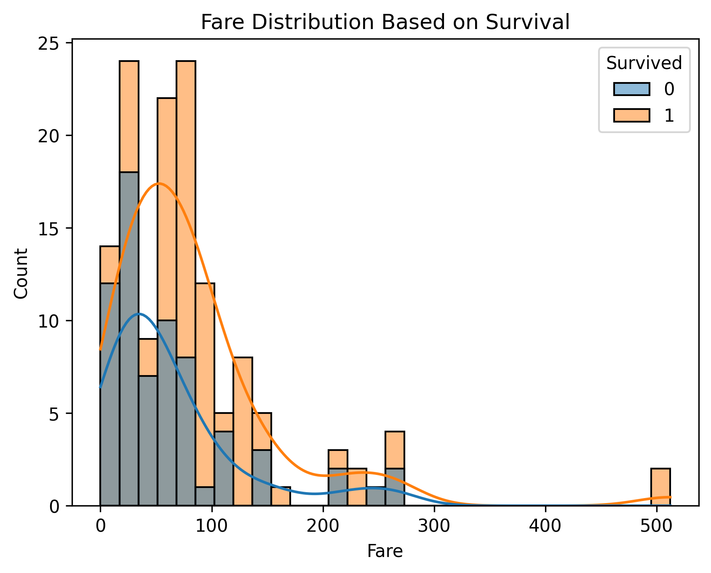
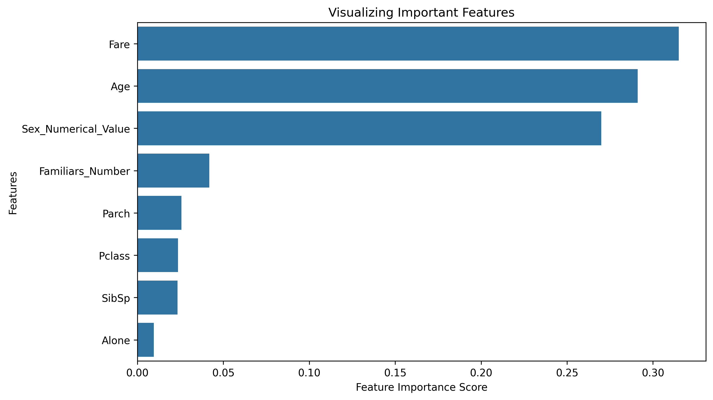
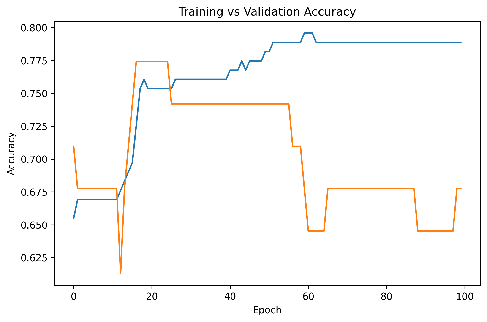

Variable Relationships
Heatmap showing relationships between variables in the Titanic dataset.
PROJECT 01 — DATA SCIENCE
An exploratory data analysis and machine learning project using the Titanic passenger dataset to investigate the factors associated with passenger survival.
01 — OVERVIEW
The Titanic dataset contains information about passengers aboard the RMS Titanic, including characteristics such as age, sex, passenger class, fare, and whether the passenger survived.
The goal of this project is to explore the dataset, identify patterns associated with survival, and build a model capable of predicting whether a passenger survived in the test data case.
I am using this project to develop my skills in data cleaning, exploratory data analysis, visualization, feature engineering, and machine learning.
02 — QUESTION
The main question I am investigating is:
Which passenger characteristics are most strongly associated with survival on the Titanic?
I am particularly interested in examining relationships involving passenger class, age, sex, fare, and family information.
03 — DATA ANALYSIS
Inspecting missing values, removing or transforming unnecessary variables, and preparing the dataset for analysis.
Comparing survival rates across passenger characteristics and identifying relationships within the dataset.
Creating visualizations to communicate patterns and differences between passengers who survived and those who did not.
Transforming existing variables and creating useful features that can be used by machine learning models.
03.5 — DATA OVERVIEW

Heatmap showing relationships between variables in the Titanic dataset.

Principal component analysis showing patterns across the dataset.
04 — VISUALIZATIONS

Distribution of fare between passengers who survived and passengers who did not survive.

Female passengers have a much higher survival rate compared to their male counterparts.

Survival by passenger class, with 1 representing upper class, 2 middle class, and 3 lower class.

The age distribution of survivors is generally younger than that of non-survivors.
05 — MACHINE LEARNING
After exploring the dataset, I use passenger age, class, fare, and other variables as features for machine learning models.
The models are trained using the available training data and evaluated based on their ability to predict passenger survival.
06 — RESULTS
Model Accuracy
Kaggle Score

Important Features
Model Accuracy
Kaggle Score

Feature analysis
In this analysis, the Random Forest model achieved a higher accuracy than the Neural Network model.
The analysis suggests that passenger characteristics such as sex, passenger class, age, and fare are important variables for understanding survival patterns in the Titanic dataset.
The machine learning results provide a quantitative way to compare how different models perform when predicting passenger survival.
07 — REFLECTION
This project helped me develop practical experience working with a real-world dataset and applying computational methods to a biological and historical question.
Through the project, I practiced working with Python, data manipulation, visualization, and machine learning.
I also learned how important data preparation and interpretation are when using computational models to answer questions.
PROJECT LINKS